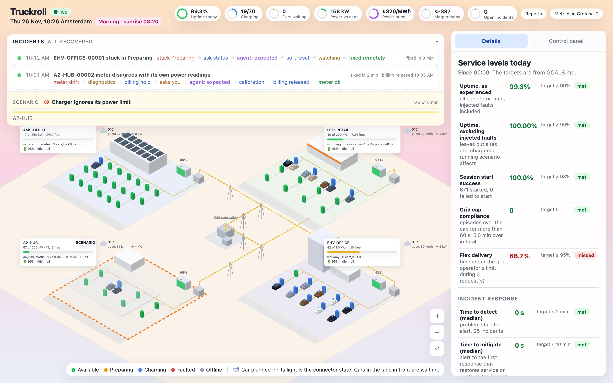
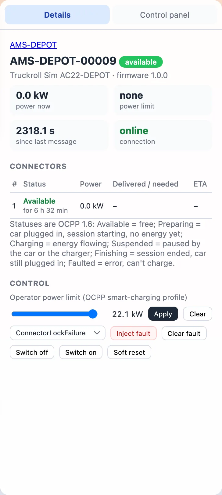
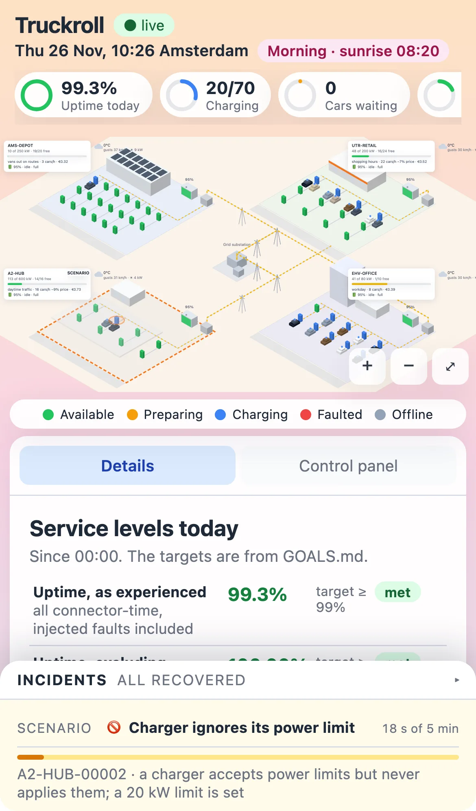
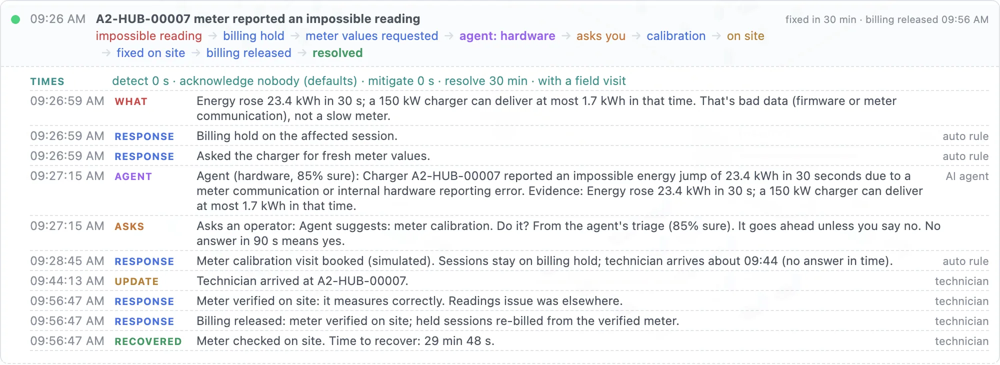
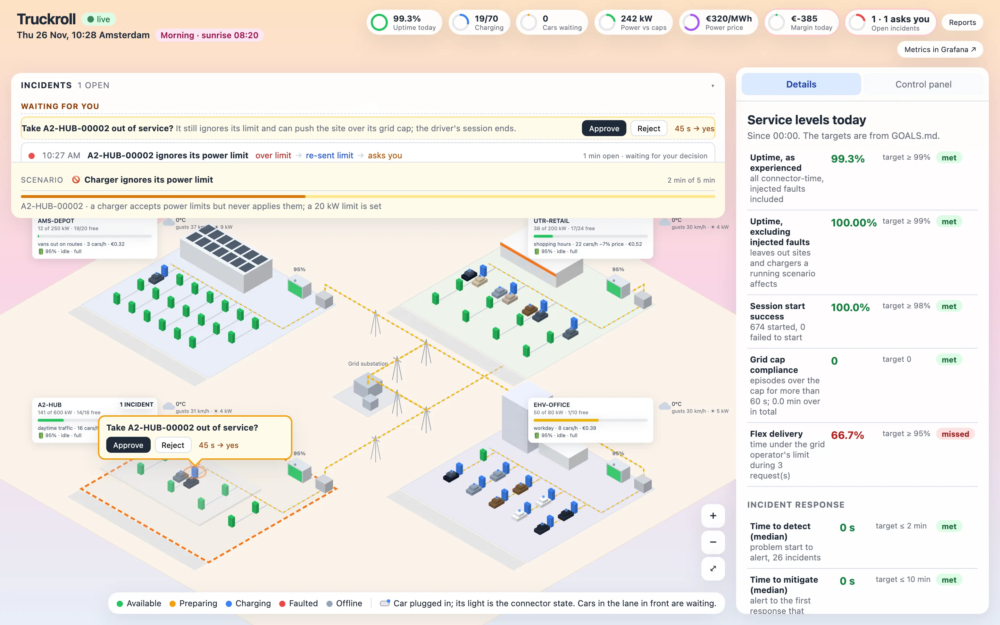
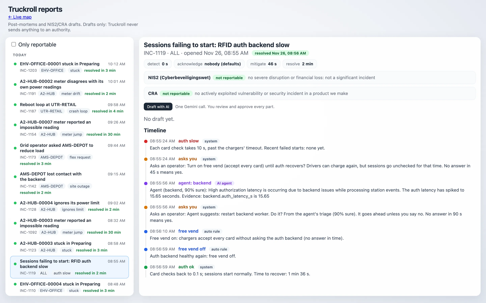
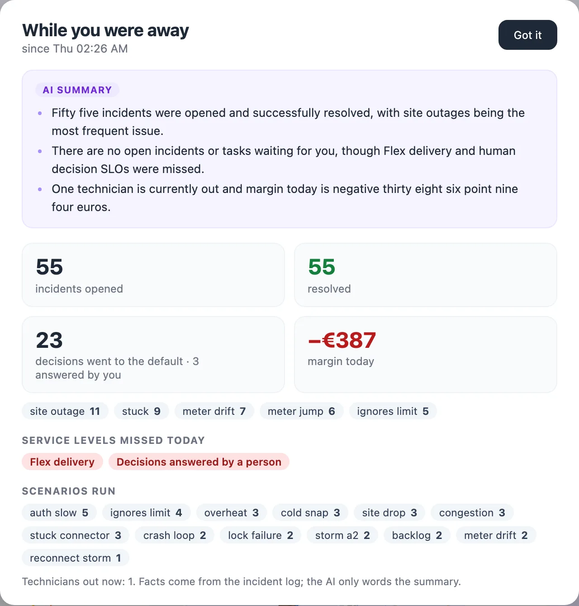
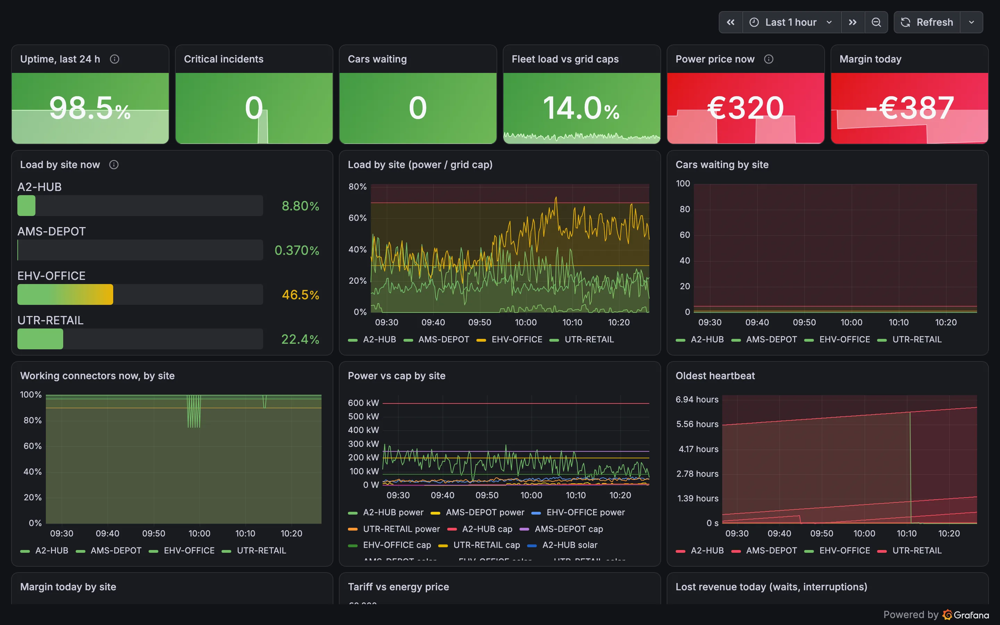
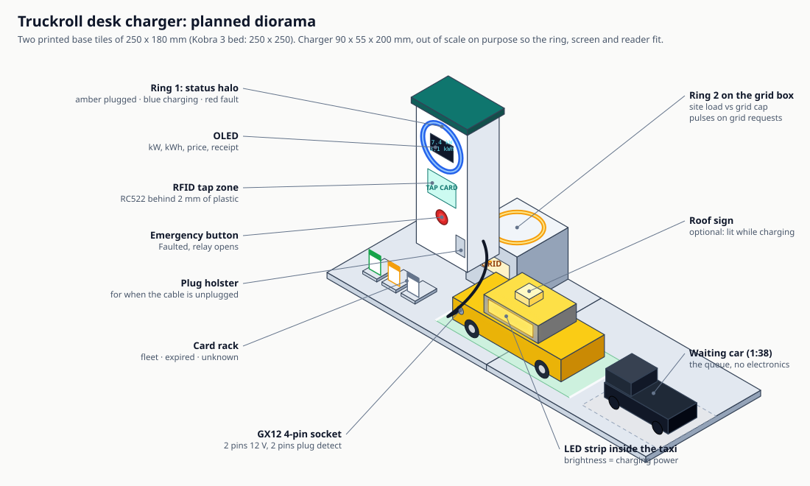

A charging network that breaks on purpose, and the operations around it. Fifty simulated chargers, real power prices and weather, faults injected around the clock, and the whole chain from detection to the regulator’s report.
Truckroll pretends to be a small EV charging operator in the Netherlands. Four sites, fifty chargers, seventy connectors. The chargers are simulated, but they speak the real protocol (OCPP 1.6J) to a backend I wrote, and everything around them behaves like the real thing: drivers arrive and queue, the grid has limits, power gets expensive in the evening, the wind knocks out a site’s uplink, a firmware update goes wrong.
The point is to learn the operator’s side of the job end to end, in one system I can break whenever I like:
It runs live, all the time. The numbers on this page come from it.
The map is an isometric drawing of the four sites, redrawn every two seconds from the live state. Cars pull in, wait in the lane in front, plug in and leave. Each car’s small light is its connector’s state. Power lines from the substation animate with the load, the sky follows the real time of day in Amsterdam, and each site card shows load against its grid cap, the current tariff and the battery.
Across the top: uptime, cars charging, cars waiting, power against caps, the price, the day’s margin and open incidents. Each one explains itself when clicked.



Everything runs in Docker Compose on one small Hetzner server. The simulated chargers connect to my backend (the CSMS) through Toxiproxy, one proxy per site, so a site’s network can drop, slow down or flap without touching the code on either end. A control service sits on top: it reads the fleet, runs the energy model and the drivers, detects incidents, asks people and the AI, and serves the map.
ocpp, websocketsThe energy side is a small model of what a real site controller does.
A random scenario starts every 5 to 10 minutes. Each one injects a real fault into the simulator, the proxies or the backend, never a fake alert:
The incident engine knows nothing about scenarios. It only watches what an operator would see: connector states, missing heartbeats, meter values, reply times, power against limits. Each kind of fault has its own rules for detect, respond, verify and recover. A stuck connector gets asked for its status, then a soft reset, then watched; a meter that drifts gets its sessions put on a billing hold; a charger that ignores limits gets the limit re-sent, then is taken out of service.
Each incident is a single line: what happened, what was done, how it ended. Clicking it opens the full timeline.

Four clocks per incident, the ones that matter on call:
Acknowledge only counts a person. When every question goes to its default, nobody acknowledged it, and the page says so instead of inventing a number.
Anything that costs money or touches a driver’s session is asked first: reset a charger, take one out of service, send a technician (€150), open a firmware ticket with the vendor, turn on free vend while card checks are down. Each question has a deadline and a default that’s stated up front: “No answer in 45 s means yes.” The decision is written into the incident either way.
Visitors on the live site can answer them. Most still go to the default: on the day of these screenshots, 3 of 26 questions were answered in time, which is a fair picture of a night shift.

When a fault needs hands, a technician is dispatched with an ETA: 15 to 30 minutes of driving, 10 to 20 on site (compressed from the real 2 to 4 hours so the whole loop is visible). On arrival they fix the simulated charger for real: replace the part, power-cycle and swap the modem, update the firmware, or check the meter, which lifts the billing hold on its sessions.
Every incident gets one call to Gemini once it’s been open for a short while. The agent writes its view into the timeline and may suggest a next step. It never acts on its own: a suggestion becomes a question like any other.
Each scenario run is scored against the ledger: did the agent name the right kind of root cause? Over 70 triaged runs:
| Measure | Result | Note |
|---|---|---|
| Root cause right | 77% | 74% on its first look, before any queries |
| Strong on | 100% | RFID auth slow 9/9, overheating 6/6, storm 6/6, depot offline 5/5, jammed lock 5/5 |
| Weak on | 22% | stuck connector 2/9: it calls a firmware hang “expected” |
| False “all clear” | 14 | said nothing was needed while a real fault ran; the reason the default for unsure suggestions is no |
| Time to a summary | 20 s | median, from the incident opening |
| Size of a triage | ≈ 700 / 110 | tokens in / out; the free tier covers it, paid would be $0.004 a day |
One early mistake: scenario events leaked into the agent’s context, so it could read the answer. The leak was fixed and scoring restarted from zero; runs before the fix aren’t counted.
Every incident has a report page. Rules, not the model, decide which regulations apply, and they say why:
The AI drafts the post-mortem and any notifications in one call, using only the facts from the incident: summary, impact, root cause, what worked, what to improve, actions with an owner. A person approves each part. Truckroll never sends anything to an authority.

Coming back to the map after a while opens a handover: what opened and closed, which questions went to the default, what’s still open, which service levels were missed, and the day’s margin. The AI writes three lines on top; the numbers underneath come from the incident log.
The AI text is cached against the exact facts it was written from. If the facts have moved on and a new call isn’t allowed yet, the card shows the facts alone rather than an outdated summary.

Targets are set up front and checked live. A snapshot from 26 November 2026:
| Service level | Today | Target | |
|---|---|---|---|
| Uptime, as drivers saw it | 99.26% | ≥ 99% | met |
| Uptime, leaving out injected faults | 99.996% | ≥ 99% | met |
| Session starts that worked | 100% | ≥ 98% | met |
| Grid cap overruns longer than 60 s | 0 | 0 | met |
| Flex delivery (under the grid operator’s limit) | 66.7% | ≥ 95% | missed |
| Time to detect, median | 0 s | ≤ 2 min | met |
| Time to mitigate, median | 0 s | ≤ 10 min | met |
| Time to resolve remotely, median | 3 min | ≤ 15 min | met |
| Questions answered by a person | 12% | ≥ 50% | missed |
Metrics and logs also go through OpenTelemetry into Prometheus and Loki, and a Grafana dashboard, generated from code, shows the fleet with the same thresholds as the map.

The repository keeps an honest log. A few entries, because they taught more than the parts that worked:
To work out what a session has used, you subtract the meter reading at its start from the reading now. Twice I took the “start” reading too early, when the meter still showed the previous session’s total. In the meter check, that raised a night of false calibration alarms. In the driver model, cars never reached their target, so they charged forever and the queues grew. Both now use the backend’s own figure for each session.
A timer saved by one build was read back by the next as the wrong kind of time, so a “quiet for 30 minutes” check passed instantly. Timers are now stored with their kind, and the 24 records were corrected rather than left wrong.
Every deploy rebuilt the charger simulator from source and cut every session. Deploys now build only my own services, and a site that loses all its sessions at once refills when it comes back.
A cached text was shown next to newer facts. Now it’s cached per set of facts, or not shown.
The next station on the network is physical: an ESP32 running MicroOcpp in a 3D-printed pedestal, a relay that clicks like a contactor, an INA226 measuring the real current, two LED rings (charger status, and the site’s load against its grid cap), an RFID reader with valid, expired and unknown cards, and a 1:24 taxi as the car, whose LED strip dims when the site controller lowers the limit. Low voltage only, nothing near mains. It will join as its own site over TLS, under a camera, so the incidents above can happen to something you can see.
After that: signed firmware, an SBOM and a vulnerability scan in CI, which is what the CRA expects from a product with a radio in it.
